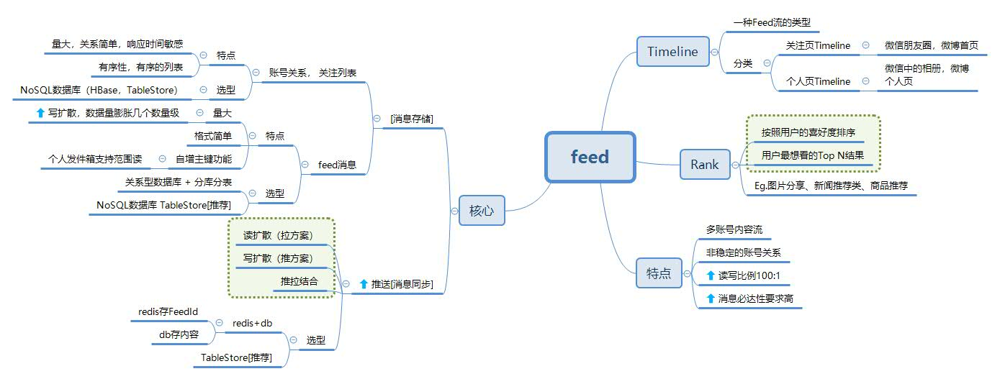
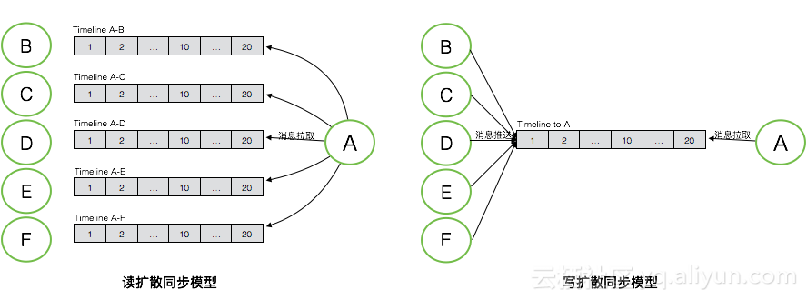
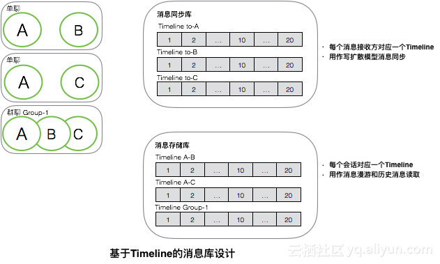
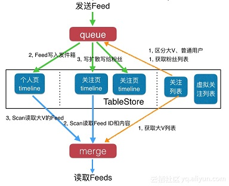
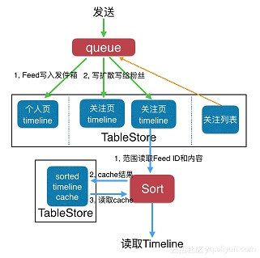

Feed总结 #

消息同步模型 #

消息同步模型- 左:BCDEF的发件箱，右:A的收件箱
基于Timeline的消息库设计 #

基于Timeline的消息库设计 - 上：用于写扩散消息同步，下：全量历史消息，读扩散消息同步
推拉结合 #

基于用户类型的Timeline推拉结合(读扩散/写扩散混合) - 上面是发布流程，下面是阅读流程
读扩散 vs 写扩散 #
| 拉模式(读扩散) | 推模式(写扩散)[推荐使用] | |
|---|---|---|
| 发布 | 个人页Timeline（发件箱） | 粉丝的关注页（收件箱） |
| 阅读 | 所有关注者的个人页Timeline | 自己的关注页Timeline |
| 网络最大开销 | 用户刷新时 | 发布Feed时 |
| 读写放大 | 放大读：读写比例到1万:1 | 放大写减少读：读写比例到50:50 |
| 优点 | 只要写一次 | 接收端消息同步逻辑会非常简单 |
| 缺点、副作用 | 1.读被大大的放大 2.响应时间长 |
消息写入会被放大， 数据会极大膨胀， |
| 针对副作用的优化-推拉结合 | 1.大V采用拉模式，普通用户使用推模式 2.对活跃粉丝采用推模式，非活跃粉丝采用拉模式 |
场景 #
| 场景 | Timeline |
|---|---|
| IM单聊 | 三个Timeline |
| IM群聊 | 1 + N个Timeline |
| 朋友圈 | 1 + N个Timeline |
| 微博 | 大V发一条微博就是 1 + M个Timeline（M « N，N是粉丝数） |
Rank #
